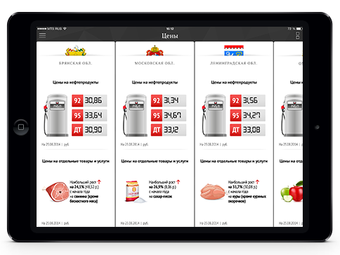

АНАЛИТИЧЕСКИЙ ЦЕНТР РУКОВОДИТЕЛЯ
Платформа аналитики и инструмент для оперативного мониторинга, анализа и прогнозирования финансового и социально-экономического развития Российской Федерации, субъектов Российской Федерации и муниципальных образований. Анализ, визуализация и методики выявления проблемных мест, точек роста и поддержки принятия управленческих решений
Особенности решения
ДЛЯ НАСЕЛЕНИЯ:
Обеспечение открытости и прозрачности деятельности органов власти и органов местного самоуправления региона
ДЛЯ ГЛАВ РЕГИОНА, МУНИЦИПАЛЬНЫХ ОБРАЗОВАНИЙ:
Создание системы ситуационного управления, оперативного мониторинга и контроля социально-экономического развития территории

ФУНКЦИОНАЛЬНЫЕ ВОЗМОЖНОСТИ
БЮДЖЕТ ДЛЯ ГРАЖДАН
Направление, позволяющее обеспечить представление бюджетов субъектов РФ, местных бюджетов и отчетов об их исполнении в доступной для граждан форме в соответствии с Приказом Минфина России №86н, Минрегиона России №357, Минэкономразвития России №468 от 22.08.2013 г. в виде информационно-аналитического ресурса, выполненного с использованием средств современной визуализации информации и интерактивной инфографики. В рамках направления разрабатываются интерактивные сервисы, позволяющие населению принять участие в бюджетном процессе («Народный бюджет», «Гражданский бюджет», сервисы обратной связи, конструктор данных, открытые данные).
СТРАТЕГИЧЕСКОЕ ПЛАНИРОВАНИЕ. ПРОГРАММНО-ЦЕЛЕВОЙ БЮДЖЕТ
Направление предназначено для обеспечения нового качественного уровня реализации процессов стратегического планирования в регионе с участием населения. Позволяет определить основные приоритеты, цели, задачи, мероприятия и показатели развития субъекта РФ или муниципального образования.

контактный центр
8 800 200 20 73
звонок бесплатный